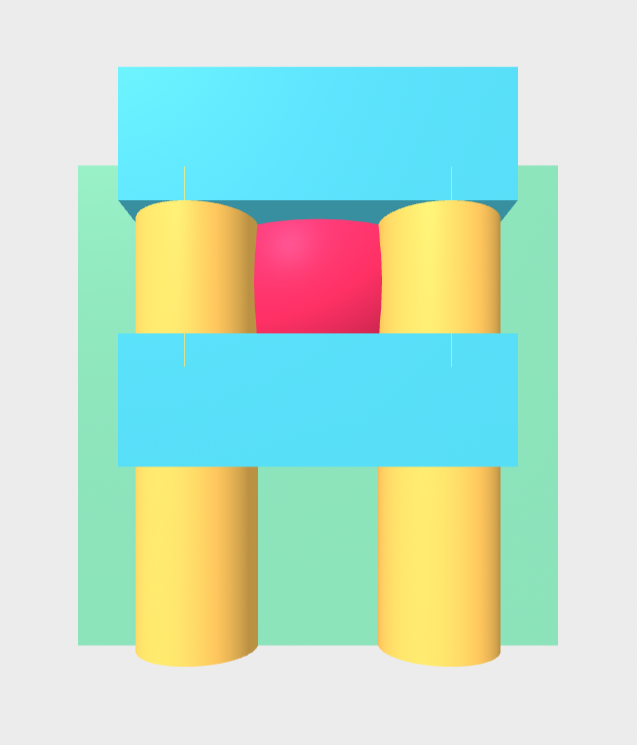
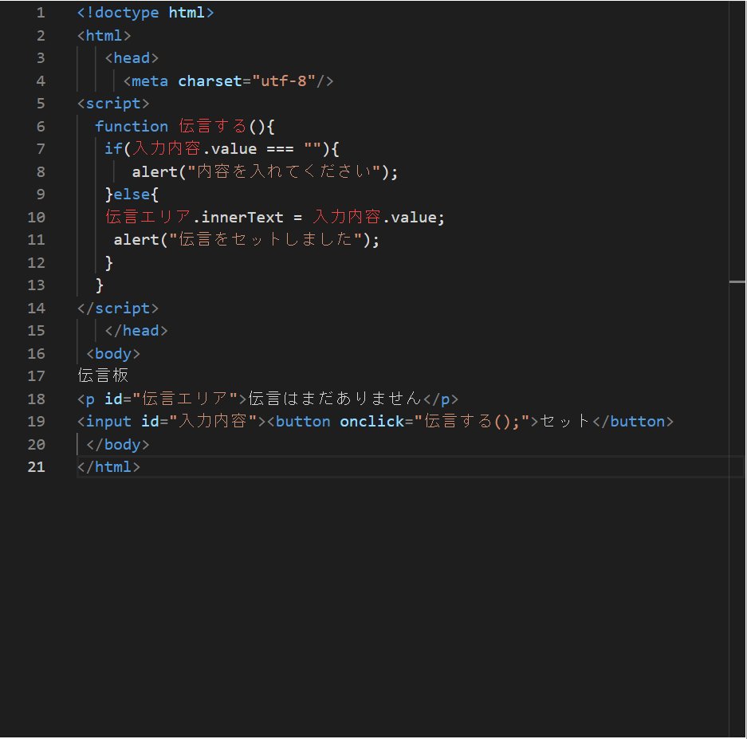

第3週目
3-1 JavaScript体験：VR空間を作る

VR空間
1.内容
A-FRAMEからコピーしたプログラムを書き換えて、自分の思い通りのものを作る。
2.感想
空間が狭いから何かを作ろうとしてもうまく作れなかった。全体を見通すことができなかったから反対側の様子がわからなかった。blenderだと四角とか三角のテンプレートは存在しているが、スプーンを作ろうとしたらいろいろ工夫がいる。
3-2 JavaScript体験：伝言プログラムを作る

伝言板
1.内容
プログラミング道場で自分でアルファベットを打って伝言板を作成する。
2.感想
自分の中では完璧に映したつもりだったのにうまく動かないときがあった。よく見てみると綴りが間違えていたり、；が抜けていたりがあった。空白の使い方があまりわからず整理するくらいしか使い方がわからなかった。
3-3 JavaScriptプログラムの３次元空間の体験
1.内容
VRゴーグルをつけて作ったモデルで遊ぶ。
2.感想
持ち上げたり運んだりするときの物理演算が不思議だと思った。球を増やしすぎたらオーバーヒートするのかなと思った。移動がワープなのは移動を制限するためだと思う。